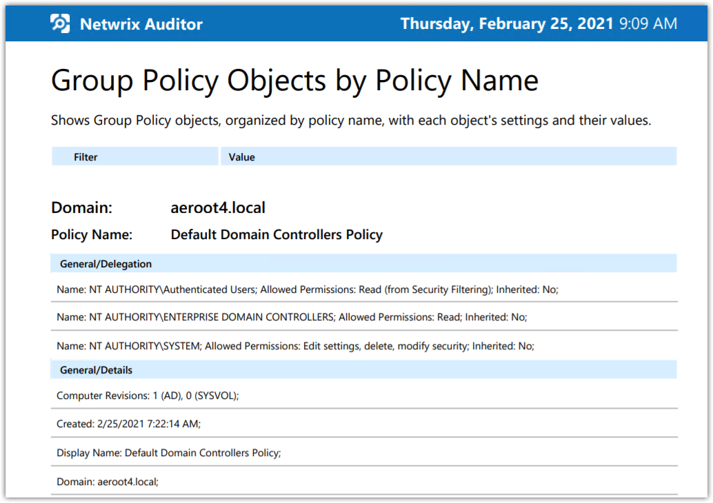
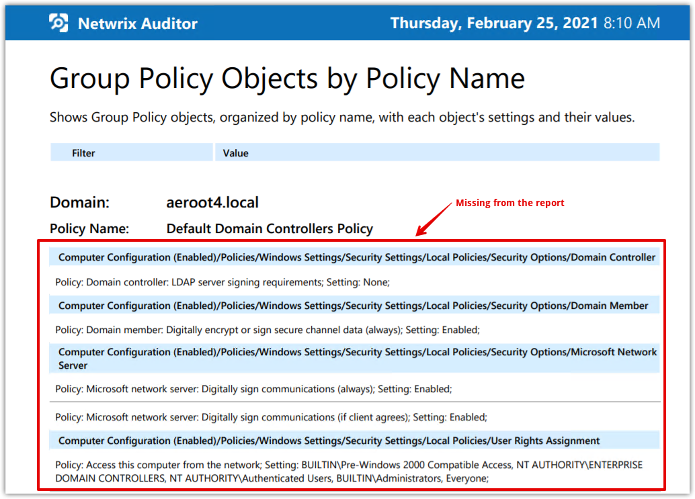
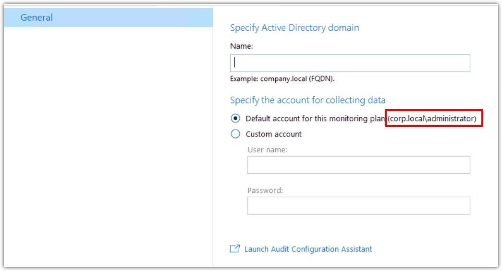

GPO SIT reports do not show GPO settings values. Only GPO summary information is
present.
For example: “Empty Group Policy Objects” report lists Policies that
actually contain some settings set.
Another example: “Group Policy Objects by Policy Name” report lists only settings of the following sections:
- General/Delegation
- General/Details
- General/Links
- General/Security Filtering

All the other data is missing form the report:
Affected environment:
The conditions below must take place altogether:
- Netwrix Auditor VM belongs to the different network subnet than the monitored active directory domain
Netwrix Auditor VM:
IP address: 10.0.0.12
Subnet Mask: 255.255.0.0 / 16
Domain Controller VM:
IP address: 192.168.8.4
Subnet Mask: 255.255.252.0 / 22
- You are not using any custom WINS servers for NETBIOS names resolution
- Domain Item Data Processing Account in the Netwrix Auditor configuration setting for the monitored domain is set in a format of “NETBIOSDOMAINNAME\ACCOUNTSAMACCOUNTMANE” (e.g. corp\administrator)
Cause: By default NetBios names cannot be resolved across different subnets using broadcasting.
Resolution: Set the data processing account for the monitored domain item in a format of “FQDNDOMAINNAME\ACCOUNTSAMACCOUNTNAME” (e.g. corp.local\administrator)
